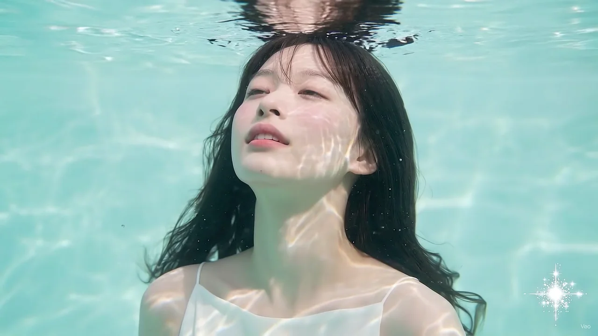
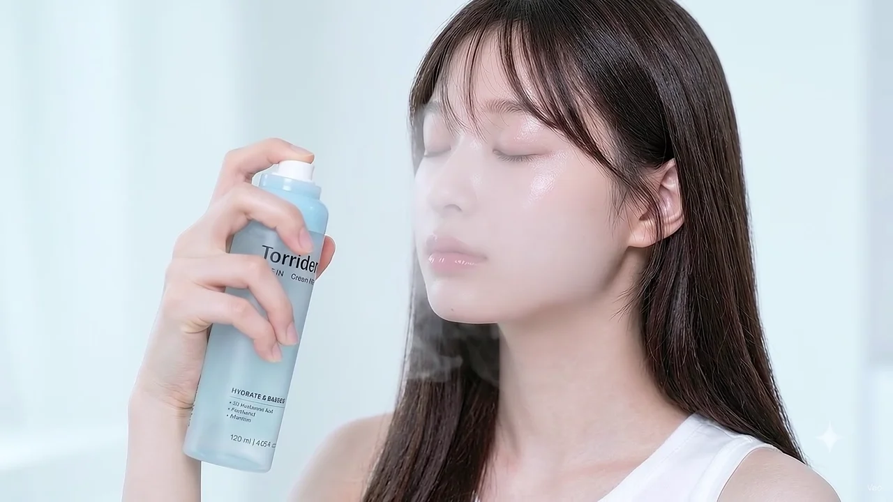

OVERVIEW
분사에서
수분감으로
미스트를 쓰는 순간의 촉촉함을 화면에서 어떻게 느끼게 할 수 있을까. 모델이 제품을 쓰는 장면으로 시작해 물방울과 수중의 빛으로 감각을 확장하고, 마지막 제품 컷에서 그 인상을 브랜드에 연결했습니다.
기획 타깃 · 짧은 뷰티 영상으로 제품을 처음 접하는 스킨케어 소비자
FINAL OUTCOME
24초 광고 영상
모델의 미스트 분사에서 시작해 수중의 기포, 물속의 모델, 수면 위 제품을 거쳐 제품명과 정면 병 이미지로 마무리됩니다.
RESEARCH & CONCEPT
빛과 입자로
투명함을 설계
아이시 아쿠아와 소프트 시안을 중심으로 색을 잡았습니다. 수중에서 빛이 굴절되는 무늬와 입자의 움직임으로 청량함과 몽환적인 분위기를 연결했습니다.



DESIGN & PRODUCTION PROCESS
24초의 시선 흐름
Google Flow로 장면을 만들고 After Effects에서 컷을 연결했습니다. 아래 시간은 각 프레임을 추출한 영상 속 위치입니다.

사용 장면제품을 쓰는 동작으로 상황을 즉시 전달합니다. 입자의 확대분사 동작에서 입자의 질감으로 시선을 옮깁니다. 수중으로 전환기포와 수면의 빛으로 수분감의 스케일을 키웁니다. 피부에 돌아오는 빛수중에서 모델의 얼굴을 다시 보여주며 감각을 피부에 연결합니다. 
제품 재등장물결 속 병을 보여주며 마지막 제품 컷을 예고합니다. 히어로와 제품명세워진 병과 제품명을 함께 보여주며 마무리합니다.
PROBLEM SOLVING
각도가 달라져도
같은 제품으로
- 문제
- 수중 장면에서 시점과 조명이 달라져도 앞에서 사용한 미스트와 같은 제품으로 읽혀야 했습니다.
- 분석
- 병의 비율과 라벨은 제품을 알아보는 단서입니다. 물결과 빛이 강한 장면에서는 이 단서가 가려지기 쉽습니다.
- 해결
- 장면 생성 시 병의 형태와 로고를 디자인 기준으로 고정했습니다. 최종 편집에서는 물결 속 사선 컷 뒤에 정면의 병과 제품명이 함께 나오는 컷을 배치했습니다.
- 결과
- 영상 후반의 수면 컷에서 제품을 다시 등장시키고, 엔딩에서 라벨과 타이틀로 제품명을 확인할 수 있게 했습니다.
REFLECTION
다음 제작에서
이어갈 기준
소재별 컷의 역할을 미리 나누면 생성 영상에서도 편집의 흐름을 잡기 쉬워집니다. 음성 테스트에서는 맑은 음색을 유지하며 속도와 억양을 조정했습니다. 다음 작업에서는 각도별 제품 레퍼런스와 라벨 확인용 프레임을 함께 준비할 계획입니다.